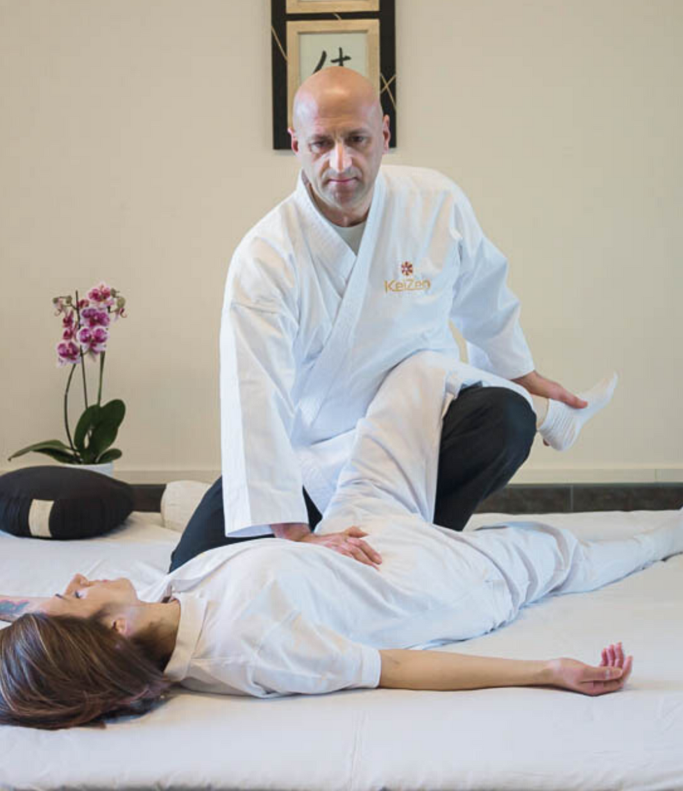
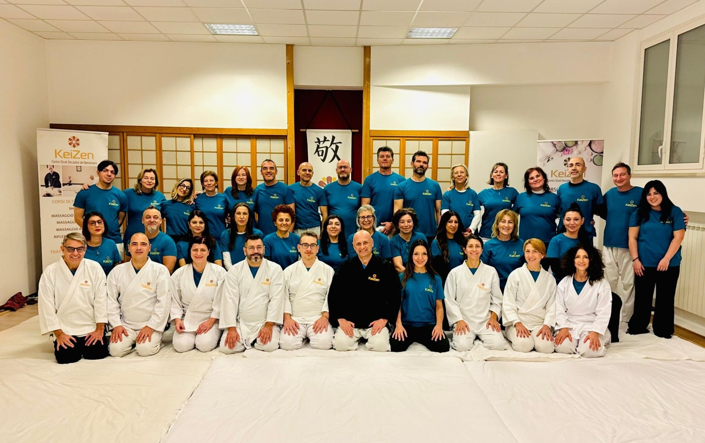
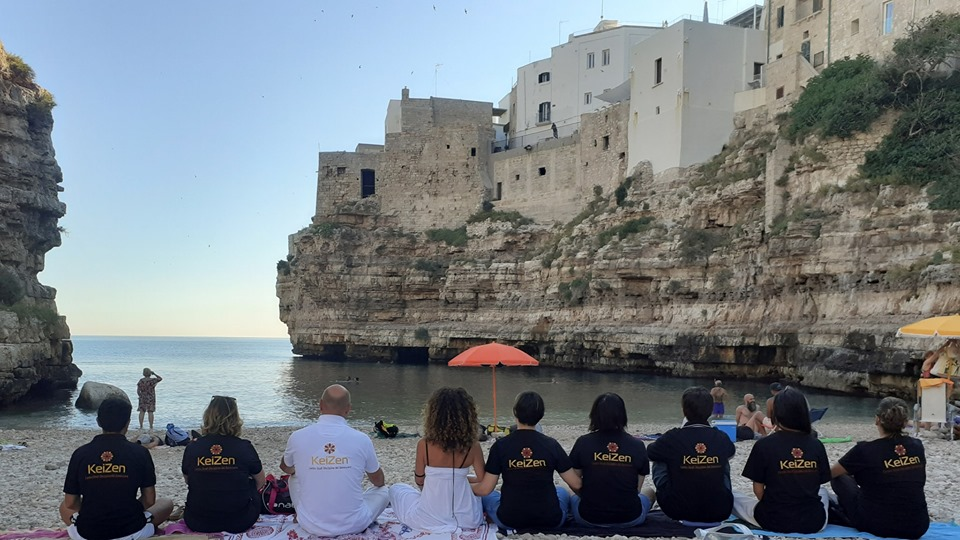

Diventa Professionista del Benessere
Percorsi formativi certificati in Shiatsu, Massaggio, Yoga, Reiki e discipline olistiche. Una scuola radicata in Puglia che trasmette sapere attraverso la pratica reale, la cura della persona e la passione autentica per il benessere.


Numeri che Parlano di Passione
Dietro ogni numero c'è una storia di impegno, crescita e dedizione. Ecco cosa abbiamo costruito in oltre un decennio di attività.

Il Metodo KeiZen
KEIZEN nasce dalla visione del M° Michele Giannuzzi, operatore olistico con oltre dieci anni di esperienza nel campo delle discipline del benessere. Un percorso formativo che unisce la rigore tecnico della tradizione orientale alla pratica concreta del territorio pugliese.
Non insegniamo solo tecniche: trasmettiamo una filosofia. Quella del miglioramento continuo, del rispetto per il corpo e per la persona, dell'impegno che trasforma lo studio in vocazione professionale.
Formazione Certificata
Percorsi riconosciuti dalle principali associazioni di categoria nazionali. I nostri diplomi aprono le porte alla professione.
Pratica Reale
Le nostre aule sono laboratori vivi. Dal primo giorno lavori su persone reali, in contesti professionali autentici.
Missione Sociale
Crediamo che il benessere sia un diritto. La nostra scuola forma professionisti capaci di portare salute e consapevolezza nella comunità.
Quattro Aree di Formazione
Un'offerta formativa completa che spazia dalle tecniche manuali tradizionali alle discipline olistiche contemporanee. Ogni percorso è pensato per formare professionisti completi e consapevoli.
Tecniche del Massaggio
7 corsi completi che coprono le principali tradizioni del massaggio professionale: dalla tecnica svedese all'aroma massaggio, dal massaggio sportivo al massaggio Ayurvedico. La base di ogni professionista del benessere.
Scopri di piùShiatsu
Il percorso pluriennale di Shiatsu è il cuore pulsante di KEIZEN. Tre anni di formazione intensa che uniscono teoria, pratica clinica e crescita personale. Un cammino trasformativo che porta alla piena padronanza dell'arte dello Shiatsu.
Scopri di piùDiscipline Olistiche
Reiki, Riflessologia Plantare, Yoga: un insieme di pratiche che ampliano la visione del professionista del benessere. Corsi autonomi o integrativi al percorso principale, aperti a tutti i livelli di esperienza.
Scopri di piùSeminari Specializzati
Moduli tematici su Respirazione Consapevole, Chakra ed Energia, Teatro e Movimento, Marketing per il Benessere. Approfondimenti pratici per chi vuole ampliare le proprie competenze oltre la tecnica manuale.
Scopri di piùDa Studente a Professionista
Sei tappe fondamentali che trasformano la curiosità in competenza, la passione in professione. Un cammino strutturato e progressivo, con il supporto costante dei nostri docenti.
1. Iscrizione
Un colloquio orientativo con il corpo docente per capire il tuo punto di partenza, i tuoi obiettivi e il percorso più adatto a te. Nessun prerequisito tecnico richiesto: solo motivazione e disponibilità a mettersi in gioco.
2. Fondamenti
Anatomia, fisiologia, basi teoriche delle discipline scelte. Le prime ore pratiche in aula con compagni di corso. Una fase essenziale per costruire la solidità su cui si fonda tutta la formazione successiva.
3. Specializzazione
Approfondimento delle tecniche specifiche della disciplina scelta. Workshop intensivi, laboratori di pratica guidata e studio dei casi clinici. La tecnica diventa sempre più precisa e consapevole.
4. Pratica Clinica
Sessioni supervisionate su clienti reali presso le nostre sedi. L'esperienza diretta che nessun libro può sostituire. Il momento in cui la teoria incontra la vita e la competenza si trasforma in padronanza.
5. Certificazione
Valutazione finale teorica e pratica. Al superamento, rilascio del diploma ufficiale KEIZEN riconosciuto dalle associazioni di categoria nazionali. La tua credenziale professionale da mostrare con orgoglio.
6. Professione
Supporto nella costruzione del tuo studio, nella comunicazione professionale e nella rete di contatti. KEIZEN non ti lascia solo dopo il diploma: il percorso verso la tua carriera continua con noi al tuo fianco.
Le Parole dei Nostri Studenti
La Nostra Realtà in Video

Le Attività KEIZEN

KEIZEN a Polignano a Mare
Le Nostre Sedi
Formiamo professionisti del benessere in Puglia e Basilicata. Sedi ben attrezzate in location di rilievo per un'esperienza formativa autentica e radicata nel territorio.

Polignano a Mare
Via V. Giannoccaro 26, 70044 Polignano a Mare (BA)
La sede storica di KEIZEN, nel cuore del borgo di Polignano a Mare. Un luogo di bellezza incomparabile che ispira e potenzia ogni percorso formativo.
Maggiori informazioni →
Castellana Grotte
Castellana Grotte (BA), Puglia
La seconda sede operativa di KEIZEN, nel territorio dell'entroterra pugliese. Ampi spazi pratici per laboratori e sessioni di pratica clinica in un ambiente raccolto e professionale.
Maggiori informazioni →I corsi si tengono anche nelle sedi di Bari, Matera e Manfredonia. Contattaci per conoscere il calendario delle prossime date nella tua zona.
"Il benessere non si insegna. Si trasmette attraverso le mani, il cuore e la dedizione di chi ha scelto questa strada."— M° Michele Giannuzzi, Fondatore